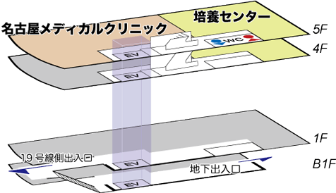
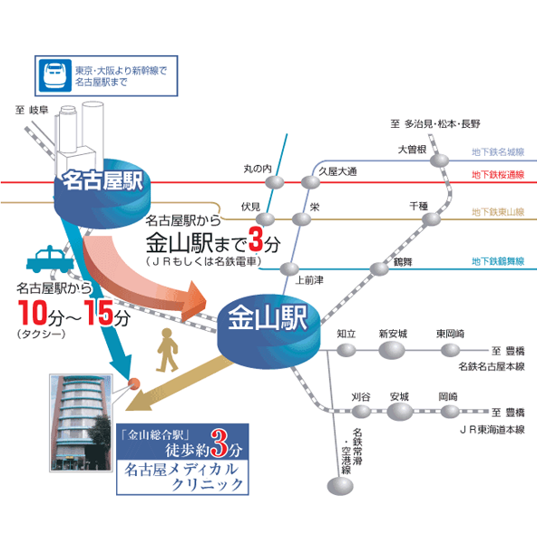
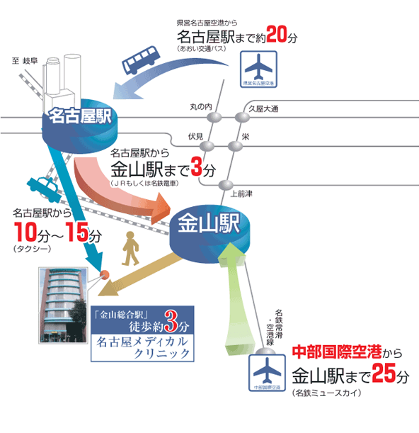
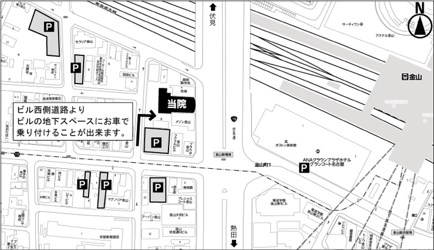

交通のご案内
交通のご案内
Access
名古屋メディカルクリニック
フロアマップ

〒460-0024
愛知県名古屋市中区正木4-8-7 れんが橋ビル5階
- 電車・タクシーを
ご利用の場合 - 飛行機を
ご利用の場合 - 車を
ご利用の場合
電車・タクシーをご利用の場合

●電車をご利用の場合
名古屋駅からＪＲ中央線・ＪＲ東海道線または名鉄に乗り換えて頂き、 金山駅で下車、南口から徒歩で３分。
●タクシーをご利用の場合
名古屋駅からタクシーにて約１０分～１５分。
飛行機をご利用の場合

●中部国際空港をご利用の場合
1.名鉄常滑・空港線にて中部国際空港から金山駅へ。
2.金山駅より徒歩3分で名古屋メディカルクリニックへ到着いたします。
最寄りの高速道路出口からの道順をご案内いたします。
詳細は各PDFにてご確認いただけます。
当院に専用の駐車場はございません。近くの時間貸駐車場をご利用下さい。
●県営名古屋空港をご利用の場合
1.あおい交通バスにて県営名古屋空港から名古屋駅へ。
2.名古屋駅からタクシーで15分です。
3.電車をご利用の際は、JRもしくは名鉄にて名古屋駅より金山駅へお越しください。
4.金山駅より徒歩3分で名古屋メディカルクリニックへ到着いたします。
当院周辺のコインパーキング
当院に専用の駐車場はございません。近くの時間貸駐車場をご利用下さい。
